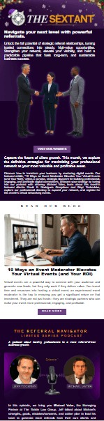

Websites and content for a referral network
As Marketing Virtual Assistant for The Referral Navigator, I designed and built websites for the network and two attorney roundtables, added a member directory and a blog page, and prepared batches of newsletter emails.
- Client
- The Referral Navigator
- Period
- 2023–2024
- Role
- Marketing Virtual Assistant
- Also
- Roundtable events, LinkedIn outreach, executive assistance
- Deliverables
- 3 websites · business directory · blog page · newsletter batches

Three websites
The network needed a public home and a separate site for each attorney roundtable. I designed and built all three.
- TheReferralNavigator.com: pages for attendees, hosts, the directory, events, and the blog
- AttorneyRainmakersRoundtable.com
- EsquireRoundtable.com


Directory and blog
I added a business directory, where members appear with a photo, name, and contact links, and a blog page with a consistent card for each article.
These are the only captures of the two pages, so they’re shown at their original size.


Newsletter campaigns
I prepared batches of newsletter emails. Each issue combined a feature story, a blog highlight, and a podcast section, with a button back to the website.
The only capture of this newsletter is 149 px wide. Select it to view it at full size.

